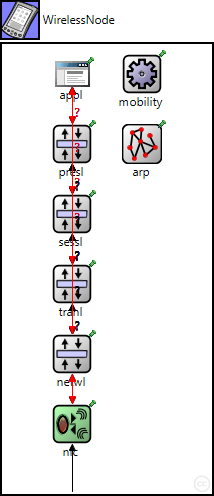
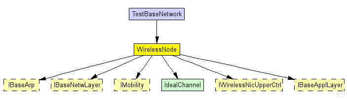
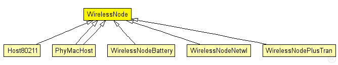

This documentation is released under the Creative Commons license
This documentation is released under the Creative Commons licenseStandard host module for a wireless MiXiM host with configurable NIC, and OSI layers, and mobility module.
The following diagram shows usage relationships between types. Unresolved types are missing from the diagram. Click here to see the full picture.
The following diagram shows inheritance relationships for this type. Unresolved types are missing from the diagram. Click here to see the full picture.
| Name | Type | Description |
|---|---|---|
| Host80211 | compound module |
Example host module using an 802.11 Network interface card. |
| PhyMacHost | compound module | (no description) |
| PhyMacHost | compound module | (no description) |
| WirelessNodeBattery | compound module |
Standard host module for a wireless MiXiM host with configurable NIC, and OSI layers, and mobility module. Additional it includes a battery module plus statistics. |
| WirelessNodeNetwl | compound module | (no description) |
| WirelessNodePlusTran | compound module | (no description) |
| Name | Type | Description |
|---|---|---|
| TestBaseNetwork | network |
This example shows the basic structure of an network using MiXiM. |
| Name | Type | Default value | Description |
|---|---|---|---|
| networkType | string | "BaseNetwLayer" |
type of the network layer |
| transportType | string | "" |
type of the transport layer |
| sessionType | string | "" |
type of the session layer |
| presentationType | string | "" |
type of the presentation layer |
| applicationType | string | "BurstApplLayer" |
type of the application layer |
| mobilityType | string | "StationaryMobility" |
type of the mobility module |
| arpType | string | "BaseArp" |
type of address resolution module |
| nicType | string |
| Name | Value | Description |
|---|---|---|
| display | bgb=210,450,white;i=device/palm;b=40,40,rect | |
| node |
| Name | Direction | Size | Description |
|---|---|---|---|
| radioIn | input |
gate for sendDirect |
| Name | Type | Default value | Description |
|---|---|---|---|
| netwl.stats | bool |
stats switch |
|
| netwl.headerLength | int |
length of the network packet header (in bits) |
|
| tranl.stats | bool |
stats switch |
|
| tranl.headerLength | int |
length of the network packet header (in bits) |
|
| sessl.stats | bool |
stats switch |
|
| sessl.headerLength | int |
length of the network packet header (in bits) |
|
| presl.stats | bool |
stats switch |
|
| presl.headerLength | int |
length of the network packet header (in bits) |
|
| appl.headerLength | int |
length of the application message header (in bits) |
// // Standard host module for a wireless MiXiM host with configurable NIC, and OSI // layers, and mobility module. // module WirelessNode { parameters: string networkType = default("BaseNetwLayer"); //type of the network layer string transportType = default(""); //type of the transport layer string sessionType = default(""); //type of the session layer string presentationType = default(""); //type of the presentation layer string applicationType = default("BurstApplLayer"); //type of the application layer string mobilityType = default("StationaryMobility"); //type of the mobility module string arpType = default("BaseArp"); //type of address resolution module string nicType; @display("bgb=210,450,white;i=device/palm;b=40,40,rect"); @node(); gates: input radioIn; // gate for sendDirect submodules: arp: <arpType> like IBaseArp { @display("p=140,100;i=block/network2"); } mobility: <mobilityType> like inet.mobility.IMobility { parameters: @display("p=140,30;i=block/cogwheel"); } nic: <nicType> like IWirelessNicUpperCtrl { parameters: @display("p=70,380;i=block/wrxtx,#008000"); } // OSI network layer netwl: <networkType> like IBaseNetwLayer { parameters: @display("p=70,310;i=block/layer"); } // OSI transport layer if defined tranl: <transportType> like IBaseNetwLayer if transportType != "" { parameters: @display("p=70,240;i=block/layer"); } // OSI session layer if defined sessl: <sessionType> like IBaseNetwLayer if sessionType != "" { parameters: @display("p=70,170;i=block/layer"); } // OSI presentation layer if defined presl: <presentationType> like IBaseNetwLayer if presentationType != "" { parameters: @display("p=70,100;i=block/layer"); } appl: <applicationType> like IBaseApplLayer if applicationType != "" { parameters: @display("p=70,30;i=app"); } connections: nic.upperLayerOut --> netwl.lowerLayerIn; nic.upperLayerIn <-- netwl.lowerLayerOut; nic.upperControlOut --> { @display("ls=red;m=m,70,0,70,0"); } --> netwl.lowerControlIn; nic.upperControlIn <-- { @display("ls=red;m=m,70,0,70,0"); } <-- netwl.lowerControlOut; //# connections of transport, session, and presentation layer depending of the //# existence if (transportType != "") { //# transport layer exists, so we can connect netwl <--> tranl netwl.upperLayerOut --> tranl.lowerLayerIn; netwl.upperLayerIn <-- tranl.lowerLayerOut; netwl.upperControlOut --> tranl.lowerControlIn; netwl.upperControlIn <-- tranl.lowerControlOut; } if (sessionType != "" && transportType == "") { //# session layer exists but no transport layer, so we can connect netwl <--> sessl netwl.upperLayerOut --> sessl.lowerLayerIn; netwl.upperLayerIn <-- sessl.lowerLayerOut; netwl.upperControlOut --> sessl.lowerControlIn; netwl.upperControlIn <-- sessl.lowerControlOut; } if (sessionType != "" && transportType != "") { //# session layer and transport layer exists, so we can connect tranl <--> sessl tranl.upperLayerOut --> sessl.lowerLayerIn; tranl.upperLayerIn <-- sessl.lowerLayerOut; tranl.upperControlOut --> sessl.lowerControlIn; tranl.upperControlIn <-- sessl.lowerControlOut; } if (presentationType != "" && sessionType == "" && transportType == "") { netwl.upperLayerOut --> presl.lowerLayerIn; netwl.upperLayerIn <-- presl.lowerLayerOut; netwl.upperControlOut --> presl.lowerControlIn; netwl.upperControlIn <-- presl.lowerControlOut; } if (presentationType != "" && sessionType != "") { sessl.upperLayerOut --> presl.lowerLayerIn; sessl.upperLayerIn <-- presl.lowerLayerOut; sessl.upperControlOut --> presl.lowerControlIn; sessl.upperControlIn <-- presl.lowerControlOut; } if (presentationType != "" && sessionType == "" && transportType != "") { tranl.upperLayerOut --> presl.lowerLayerIn; tranl.upperLayerIn <-- presl.lowerLayerOut; tranl.upperControlOut --> presl.lowerControlIn; tranl.upperControlIn <-- presl.lowerControlOut; } //# finaly we connect the highest existing layer of transport, session, or presentation to //# the application layer if specified if (applicationType != "" && presentationType == "" && sessionType == "" && transportType == "") { netwl.upperLayerOut --> appl.lowerLayerIn; netwl.upperLayerIn <-- appl.lowerLayerOut; netwl.upperControlOut --> { @display("ls=red;m=m,70,0,70,0"); } --> appl.lowerControlIn; netwl.upperControlIn <-- { @display("ls=red;m=m,70,0,70,0"); } <-- appl.lowerControlOut; } if (applicationType != "" && presentationType == "" && sessionType == "" && transportType != "") { tranl.upperLayerOut --> appl.lowerLayerIn; tranl.upperLayerIn <-- appl.lowerLayerOut; tranl.upperControlOut --> { @display("ls=red;m=m,70,0,70,0"); } --> appl.lowerControlIn; tranl.upperControlIn <-- { @display("ls=red;m=m,70,0,70,0"); } <-- appl.lowerControlOut; } if (applicationType != "" && presentationType == "" && sessionType != "") { sessl.upperLayerOut --> appl.lowerLayerIn; sessl.upperLayerIn <-- appl.lowerLayerOut; sessl.upperControlOut --> { @display("ls=red;m=m,70,0,70,0"); } --> appl.lowerControlIn; sessl.upperControlIn <-- { @display("ls=red;m=m,70,0,70,0"); } <-- appl.lowerControlOut; } if (applicationType != "" && presentationType != "") { presl.upperLayerOut --> appl.lowerLayerIn; presl.upperLayerIn <-- appl.lowerLayerOut; presl.upperControlOut --> { @display("ls=red;m=m,70,0,70,0"); } --> appl.lowerControlIn; presl.upperControlIn <-- { @display("ls=red;m=m,70,0,70,0"); } <-- appl.lowerControlOut; } radioIn --> nic.radioIn; }
This documentation is released under the Creative Commons license